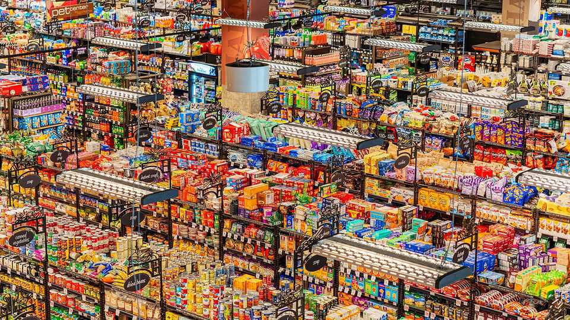
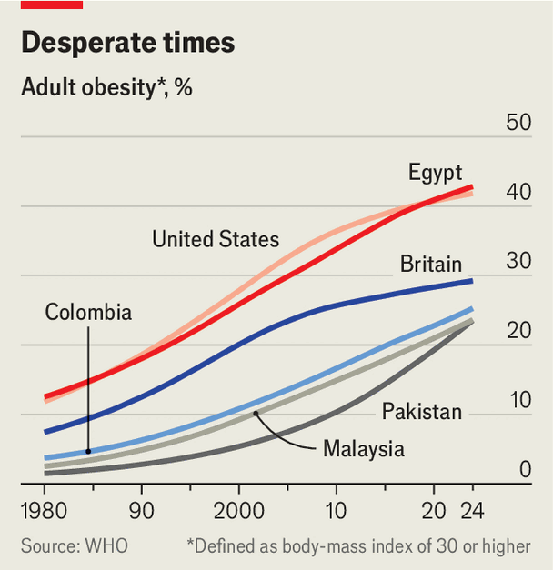

Nagging people to eat healthily does not work
Taxes, planning rules, limits on ads—anything to curb junk food

Oct 8th 2026
Sunday afternoons in Simón Bolívar park are an orgy of calories. Many stalls in this green corner of Colombia’s capital, Bogotá, sell obleas: sandwiches of wafers stuffed with layers of fattening fillings, including syrups, jams, caramel and cheese. An acid green “bubble-gum” sauce is among the enticing options. “Life’s too short not to eat the food that you love”, reads a sign above one of the stalls.
So Colombians evidently believe. A quarter of them are obese, according to the UN’s World Health Organisation, a share that has risen fivefold since 1980. Diabetes, high blood pressure and kidney disease—all chronic conditions associated with obesity—are rife. The health-care system, already severely underfunded and then stretched almost to breaking point by covid-19, has struggled to cope.
In 2022 the previous government decided radical action was needed. It required all processed food with high levels of sugar, salt or the unhealthiest forms of fat to be labelled as such, with big black warning signs. More important, it imposed a 10% tax on such products, which rose to 15% in 2024 and 20% last year.
Colombia is not the only place that is meddling in the food business to counter obesity. On September 29th Gavin Newsom, the governor of California, who is likely to run for president in 2028, signed a bill requiring grocery chains to place healthy foods in “high-traffic areas” within stores. A law came into effect in Scotland on October 1st barring big businesses from displaying unhealthy foods prominently in shops and from offering promotions that encourage bulk purchases of them, such as buy-one-get-one-free deals. In India on October 6th a public consultation ended on a proposal to prohibit sales of junk food to children within 50 metres of a school. The state of Maharashtra already has such a law, barring sales of junk food to anyone near a school.
Heavy-handed policies like these used to be a rarity. Between 1992 and 2020 Britain adopted no fewer than 14 official government plans to curb rising obesity (not counting the initiatives of devolved governments in Northern Ireland, Scotland and Wales). Those plans involved 689 individual policies. The majority aimed to make consumers more aware of the health risks of junk food and to provide better access to healthy alternatives, especially in schools. None banned any forms of junk food, only 3% restricted access to it and only two policies (or 0.3% of the total) created any financial disincentive to consume it, such as higher taxes.

This cajoling approach has failed. England’s obesity rate has doubled since the early 1990s. About a fifth of 11-year-olds are now obese. In both rich countries and poorer ones, obesity rates have been rising steadily (see chart). In America 72% of adults are obese or overweight. In Mexico 74% are. All this costs the countries in the OECD, a club mostly of rich countries, an average of 3% of GDP a year in health-care spending and lost productivity.
Although GLP-1 drugs, the weight-loss treatments that have become commonplace in the rich world in recent years, hold out the hope of dramatically reducing obesity, they are pricey, especially considering patients must remain on them indefinitely. Poorer countries, in particular, will struggle to provide them to a big proportion of the population.
Politicians are instead turning to a bewildering array of policies intended not to persuade people to change their habits, but rather to alter the “food environment” around them. Many of the new rules concern labels. About ten years ago health officials in Britain, France and elsewhere created simple symbols in traffic-light colours to rank foods from best to worst, either for ingredients of concern (such as fat, sugar and salt) or overall, based on a formula that takes into account healthy ingredients, too. Many countries have since adopted such easily digestible scoring systems—but most remain voluntary.
That is changing fast. A bill to make France’s labels mandatory has been introduced in parliament. Singapore will soon oblige manufacturers to label foods that score poorly under its system. The most sweeping rules, however, involve warning labels like Colombia’s, akin to the frightening messages many countries require on cigarette packets. Since 2016, for instance, Chile has obliged manufacturers to place as many as four black, stop-sign-shaped alerts on the front of unhealthy products, depending on how many ingredients exceed the regulatory threshold. Canada adopted similar rules earlier this year.
Such rules have an impact, both by deterring buyers and by prompting chastened manufacturers to alter recipes to avoid being branded unhealthy. A recent analysis of Mexico’s labelling law, which came into effect in 2020, concluded that it had led to a 15% drop in calories sold, a 25% drop in added sugar and 12% drop in saturated fats, even as overall sales volumes remained stable. About 90% of the reduction in calories was the result of products being reformulated, rather than of people changing which products they bought.
Restrictions on marketing unhealthy foods are also proliferating. About a dozen countries ban television ads for junk food when children are likely to be watching or bar ads and packaging from appealing to children using cartoon characters and the like. In January Britain went a step further, banning ads for unhealthy foods online and on social media, following a similar move by Portugal in 2019. Local governments can be especially zealous. In 2022 New York banned junk-food ads on all city property, as have several places in Australia and Britain. Amsterdam and London ban them on public transport.
Then there are restrictions on where unhealthy foods can be sold. Britain’s planning law was amended in 2024 to allow local authorities to ban new fast-food joints within walking distance of a secondary school—although so many such outlets already exist that the new rules may have little effect. Maharashtra’s law is much more restrictive, but enforcement is patchy.
The difficulty of enforcement is one of the many drawbacks of complex rules around junk food. They can place heavy burdens on businesses, which also often find creative ways around them. Since 2022, for example, Britain has banned supermarkets from displaying unhealthy packaged foods near checkouts, shop entrances and the ends of aisles, to curb impulse purchases. The share of the affected foods in overall sales fell by 7% the year after the ban. But sugary, greasy pastries swiftly took their place near the entrances of shops, since freshly baked items are exempt from the ban.
Such experiences have prompted authorities in Britain to consider an alternative approach. Instead of umpteen rules about what can be sold where and to whom, they are pondering targets for the healthiness of supermarket chains’ total sales, based on the nutrition scores already in use for Britain’s restrictions on junk-food advertising. It would be, in effect, a minimum spinach-to-sweets ratio. But the chains would be free to decide whether to promote spinach more, or sweets less, or to persuade junk-food manufacturers to put more spinach in their sweets.
Supermarkets wield lots of influence over shoppers. Sainsbury’s, a big British chain, saw sales of fruit quadruple when it offered collectible Disney-themed cards with each sale. Supermarkets would probably press suppliers to make their products healthier, says Hugo Harper of Nesta, a think-tank in London. A frozen pizza, for instance, might end up with a few more vegetables on top and a bit less salt in the sauce. Nesta estimates that marginal changes to a quarter of items in the typical British shopping basket could lead to a sustained 8.5% reduction in calories in an average consumer’s diet. Such a reduction, in turn, could halve obesity.
Retailers, naturally, do not want to be responsible for getting people to eat more healthily, even if governments give them some leeway about how they do it. A simpler alternative is to curb consumption of junk food by taxing it. More than 100 countries impose special taxes on sugary drinks—with great effect. The year after Mexico imposed such a tax in 2014, sales of the products affected fell by around 6%. Many manufacturers also changed their recipes to make drinks less sugary. Mexico’s government is so fond of the tax it raised it from 1.64 pesos ($0.09) a litre to 3.08 earlier this year.
Any talk of raising taxes is awkward at a time of high inflation and widespread resentment at the rising cost of living. Public opinion does appear to be warming to more forceful regulation, however. In a poll last year 51% of Americans said they were in favour of restrictions on the sale of junk food in grocery stores and 44% approved of higher taxes on it. Nearly 70% of Britons say they would support an extension of Britain’s tax on sugary drinks to other unhealthy foods if the proceeds were used to promote better diets.
Moreover, many governments already tax food both heavily and inconsistently. In some countries it should be possible to penalise junk food by adjusting rates for different products without raising taxes overall. A study published last year in Nature found that ten European countries charge higher rates of value-added tax on fruits and vegetables than on meat and dairy. Reversing this, the researchers argued, would bring about big health benefits at almost no cost to consumers. VAT reforms along these lines are being discussed in Denmark, Germany and the Netherlands.
Junk food is popular for many reasons. It is convenient. It is often cheaper, calorie for calorie, than healthier food. Sugar, salt and fat are hard to resist. Food companies and supermarkets make more money from it than from healthy stuff, because they both sell more of it and earn higher margins on it. Against these daunting advantages, however, governments have found a formidable array of counter-measures. ■